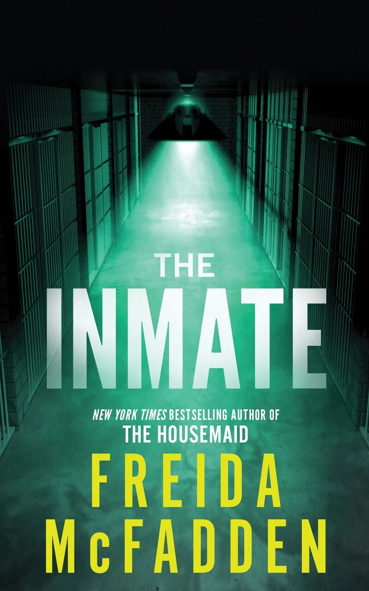

The inmate
Autrice : Freida McFadden
Genre: Thriller psychologique
Année de publication: 2022
Langue: Anglais

Sommaire
Brooke Sullivan est infirmière. Après la mort de ses parents, elle revient vivre dans sa ville natale avec son fils de 10 ans, Josh et se trouve un emploi dans une prison haute sécurité. Le seul problème est que Shane Nelson, son ancien amoureux du secondaire, y purge une peine de prison à vie.
11 ans auparavant, Brooke et plusieurs autres amis avaient passé une soirée avec Shane dans une ferme isolée. La soirée avait tourné au massacre : 3 ados avaient été assassinés, Brooke a été étranglé et leur ami Tim avait été blessé.
Brooke avait désigné Shane comme agresseur contribuant à sa condamnation... sans avoir vu le visage de celui qui l’avais agressé.
Brooke renoue avec Tim, l’autre survivant de cette soirée, et elle commence à se demander si elle n’a pas envoyé le mauvais homme en prison.
Critique
Une fin dont on ne s’attends pas. Un thriller à la « Frieda » : on reprends son souffle seulement à la fin.
Évidemment… je n’ai pas vu venir la fin MAIS JE NE SUIS PAS UNE RÉFÉRENCE LÀ-DESSUS!
Moment favori
Le pouvoir magique que Freida a à toujours nous faire voir seulement ce qu’ELLE a décidé de nous laisser voir. Pas plus.. Pas moins!
Moment moins fort
Je l’ai trouvé un peu plus léger que ses autres romans, et un peu plus léger que ce que je lis habituellement.